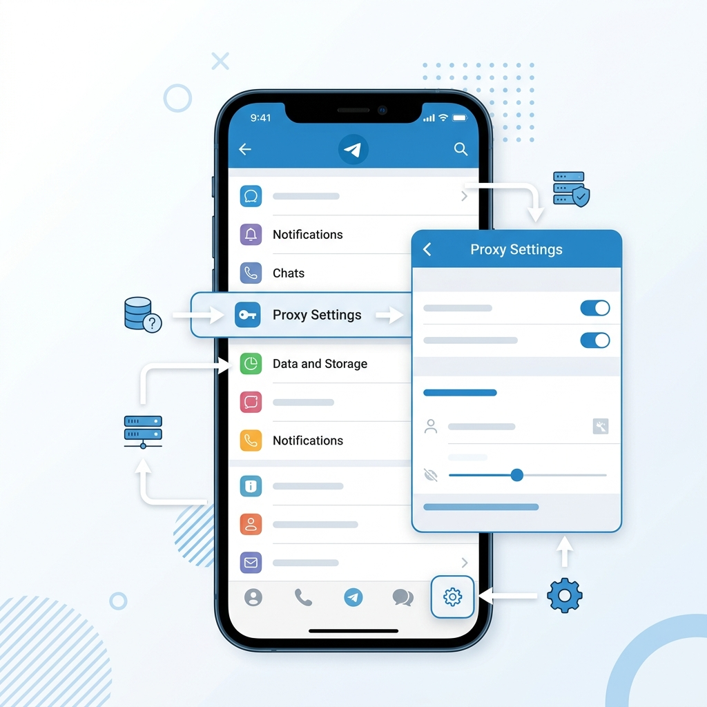

Лучшие рабочие чаты сообщества.Только целевые заявки.Без спама ,кидал и прочей нечисти.
Используйте этот прокси, если Telegram работает нестабильно.

Нажмите синюю кнопку «Подключить прокси» выше.
В открывшемся окне Telegram нажмите «Включить».
Готово! Прокси работает в фоновом режиме.